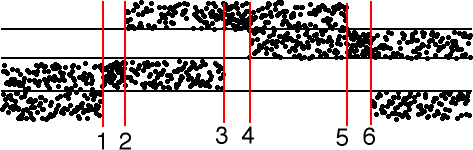
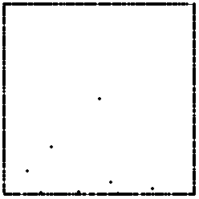

| 1(a) The few points in the interior of the square come from starting the driven
IFS at |
| To understand the other points, we divide the time series into regimes where the bin occupancy changes. |
|  |
| To the left of line 1 all data points lie in bins 1 and 2, so the driven IFS generates the line between corners 1 and 2. |
| Between lines 1 and 2, all data points line in bin 2, so the driven IFS points go to corner 2. |
| Between lines 2 and 3 all data points lie in bins 2 and 4, so the driven IFS generates the line between corners 2 and 4. |
| Between lines 3 and 4, all data points line in bin 4, so the driven IFS points go to corner 4. |
| Between lines 4 and 5 all data points lie in bins 3 and 4, so the driven IFS generates the line between corners 3 and 4. |
| Between lines 5 and 6, all data points line in bin 3, so the driven IFS points go to corner 3. |
| To the right of line 6 all data points lie in bins 1 and 3, so the driven IFS generates the line between corners 1 and 3. |
|  |
Return to Homework 3 Practice.